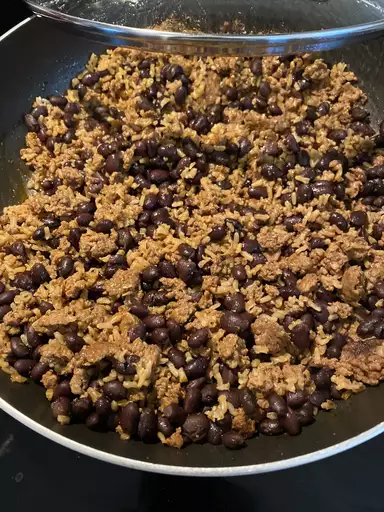

Black Beans and Rice

Description
This is a recipe for Black Beans & Rice
Ingredients
- Olive oil
- 1 chopped onion
- 2 cloves of garlic
- Rice (white preferred)
- Broth
- 3 1/2 cups of drained black beans
- Cumin & cayenne pepper for seasoning
Steps
- Cook the onion and garlic until the onion has softened.
- Stir in the rice, then add the broth and bring to a boil.
- Add the beans and spices.
See original recipe